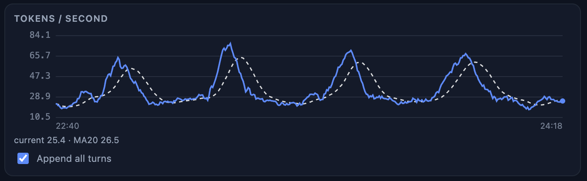
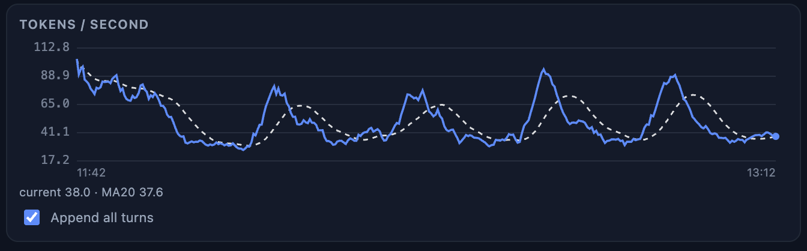
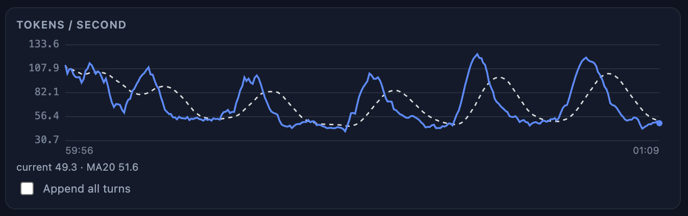

A from-scratch Rust + CUDA inference engine for one to four GB10 machines — NVIDIA DGX Spark and compatible OEM systems. Built for a hand-selected set of large models (Qwen3.5/3.6/3.8 family, Tencent Hy3, KAT-Coder), each ported, measured and gated on real hardware before it ships. No Python runtime, no framework serving stack: one binary plus its PTX kernels.
| QWEN3.8 27B NVFP4 + DFLASH 2 | avg | peak | sustained |
|---|---|---|---|
| Single node | >40 tok/s | ~100 | ~70 |
| TP=2 | ~56 tok/s | ~105 | ~85 |
| TP=4 | ~85 tok/s | ~150 | ~125 |
The DGX Spark has one scarce resource: ~255 GB/s of sustainable memory bandwidth. Every design decision in veloGB10 is about spending it well — fewer bytes, not fewer kernel launches.
~94% GEMM- and weight-bandwidth-bound, tuned as such: on 9B the LM head sustains 229 GB/s — 90% of the machine's measured pure-read ceiling. NVFP4 tensor-core GEMMs, fused projections, frequency-ranked draft vocabularies.
The serving GEMM runs one fixed shape, so decode and verify execute identical instruction sequences and greedy MTP speculation is exactly lossless — same tokens, same bytes. Gated under statistical process control, not pass/fail coin flips.
Two or four GB10 boxes decode a single request measurably faster, not just bigger. Zero-config nodes (the head ships weights, settings and calibration at sync) and a per-step agreement guard that aborts loudly on any divergence.
GatedDeltaNet layers carry a fixed-size recurrent state, so KV grows only on periodic full-attention layers. Native GDN checkpoints make prefix caching (~99% prefill skip on hits) and lossless rollback work on the hybrid architecture. Up to 256K context on the 27B.
Streaming, tool calling with schema-aware argument coercion, seedable sampling,
continuous batching, prefix caching, reasoning-effort levels, vision on a GPU
tower — plus /v1/tokenize endpoints for exact benchmark prompt
construction.
The engine's --otel-* flags stream per-token generation telemetry
(OTLP/HTTP-JSON) straight into VeloBenchmark's
receiver — the same live instruments you see on chat, fed by the engine
itself. Drops rather than blocks; absent flag means zero cost.
Tokens-per-second traces pulled from the engine's live stats panel while serving Qwen3.8-27B NVFP4 + DFlash 2 — the full spread of a session (where throughput bottoms out and where it tops out), per deployment mode.



Every trace, the SGLang comparisons and the 8-hour endurance soak are in the documentation.
Model families are added deliberately rather than generically: each is ported, measured and gated on GB10 hardware before it ships. The model is a directory, not a build.
| Model | Architecture / recipe |
|---|---|
| Qwen3.5 0.8B–9B | dense hybrid, NVFP4 mixed/full |
| Qwen3.6 27B | dense hybrid, NVFP4 full |
| Qwen3.6 35B-A3B | MoE hybrid, NVFP4 full |
| Qwen3.5 122B-A10B | MoE hybrid, NVFP4 mixed / GDN4 |
| Qwen3.8 27B | dense hybrid, NVFP4 + DFlash 2, 256K |
| Tencent Hy3 295B-A21B | pure-GQA MoE, NVFP4 |
| KAT-Coder-V2.5-Dev | 35B-A3B MoE hybrid, code specialist |
Prebuilt packages on the releases page include the
inference binary, the required PTX kernels, SHA-256 checksums and build provenance
notes — no compiling required on a DGX Spark. From source it is
cargo build --release with the CUDA toolkit present.
# single node, single user (maximum speed)
./gb10_inference --server --model-dir=/path/to/model \
--port=9000 --max-seq-len=32768 --max-batch=1 \
--prefix-cache=on --mtp=auto
# two nodes, TP=2 (peer first: zero configuration)
./gb10_inference --node --port 29500 # second GB10
./gb10_inference --server --model-dir=... --tp \
--nodes <peer-ip>:29500 --port=9000 # head